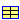

The magnetisation characteristics my_r(B) of all soft magnetic materials currently included in this library are approximated with a function. Each material is characterised by the five parameters of this function. The approximated characteristics my_r(B) for most of the ferromagnetic materials currently included are shown in the plots below (solid lines) together with the original data points compiled from measurements and literature.
For the nonlinear curve fit, data points for high flux densities (approximately B>1T) have been weighted higher than the ones for low flux densities. This is due to the large impact of saturated ferromagnetic sections in a magnetic circuit compared to that of non-saturated sections with relative permeabilities my_r>>1.
Note that the magnetisation characteristics largely depend on possible previous machining and on measurement conditions. A virgin material normally has a considerably higher permeability than the same material after machining (and packet assembling in case of electric sheets). This is indicated in the above plots by different magnetisation curves for similar materials. In most cases, the original data points represent commutating curves obtained with measurements at 50Hz.
Additional user-specific materials can be defined as needed. This requires determination of the approximation parameters from the original data points, preferably with a nonlinear curve fit.
| Name | Description |
|---|---|
| Various ferromagnetic steels | |
| Various electric sheets | |
| Pure iron | |
| Cobalt iron | |
| Nickel iron | |
| my_rApprox | Approximation of relative permeability my_r as a function of flux density B for soft magnetic materials |
|  ApproximationData | Coefficients for approximation of soft magnetic materials |
The relative permeability my_r as a function of flux density B for all soft magnetic materials currently included in this library is approximated with the following function [4]:
| Type | Name | Default | Description |
|---|---|---|---|
| Real | B | Flux density in ferromagnetic flux tube element | |
| Real | my_i | Initial relative permeability at B=0 | |
| Real | B_myMax | Flux density at maximum relative permeability | |
| Real | c_a | Coefficient of approximation function | |
| Real | c_b | Coefficient of approximation function | |
| Real | n | Exponent of approximation function |
| Type | Name | Description |
|---|---|---|
| Real | my_r | Relative magnetic permeability of ferromagnetic flux tube element |
function my_rApprox
"Approximation of relative permeability my_r as a function of flux density B for soft magnetic materials"
extends Modelica.Icons.Function;
input Real B "Flux density in ferromagnetic flux tube element";
//Material specific parameter set:
input Real my_i "Initial relative permeability at B=0";
input Real B_myMax "Flux density at maximum relative permeability";
input Real c_a "Coefficient of approximation function";
input Real c_b "Coefficient of approximation function";
input Real n "Exponent of approximation function";
output Real my_r
"Relative magnetic permeability of ferromagnetic flux tube element";
protected
Real B_N
"Flux density B normalized to flux density at maximum relative permeability B_myMax";
algorithm
B_N := abs(B/B_myMax);
my_r := 1 + (my_i-1 + c_a*B_N)/(1 + c_b*B_N + B_N^n);
end my_rApprox;
 Modelica_Magnetic.Material.SoftMagnetic.ApproximationData
Modelica_Magnetic.Material.SoftMagnetic.ApproximationData
The parameters needed for approximation of the magnetisation characteristics of included soft magnetic materials are declared in this record.
| Type | Name | Default | Description |
|---|---|---|---|
| RelativePermeability | my_i | 1 | Initial relative permeability at B=0 [1] |
| MagneticFluxDensity | B_myMax | 1 | Flux density at maximum relative permeability [T] |
| Real | c_a | 1 | Coefficient of approximation function |
| Real | c_b | 1 | Coefficient of approximation function |
| Real | n | 1 | Exponent of approximation function |
record ApproximationData
"Coefficients for approximation of soft magnetic materials"
extends Modelica.Icons.Record;
parameter SI.RelativePermeability my_i = 1
"Initial relative permeability at B=0";
parameter SI.MagneticFluxDensity B_myMax = 1
"Flux density at maximum relative permeability";
parameter Real c_a = 1 "Coefficient of approximation function";
parameter Real c_b = 1 "Coefficient of approximation function";
parameter Real n = 1 "Exponent of approximation function";
end ApproximationData;